Simulado 1
No meio do caminho
Para medir onde você está e ajustar o estudo enquanto o edital não sai.
30 dias após a compra
Material independente, sem vínculo com o Governo de Santa Catarina, com a SEJURI nem com a banca.

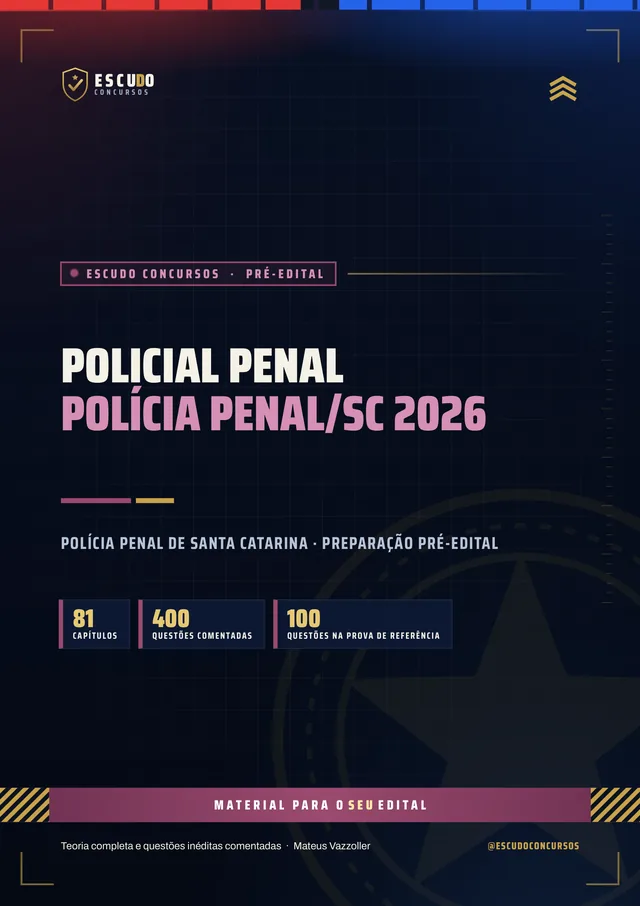
400questões
comentadas
ConcursoPolícia Penal/SC2026 · Policial Penal
Briefing
O edital de Policial Penal de Santa Catarina ainda não saiu. O último concurso, o do Edital 001/2019-SAP/SC (FEPESE, 600 vagas), teve a validade encerrada em 31/12/2025, e o próximo será o primeiro de nível superior da carreira. Quem começa agora chega na frente. Curso feito sobre o programa da última prova, atualizado para a LC 774/2021, com a legislação de Santa Catarina e questões de 5 alternativas com gabarito comentado.
Pré-edital: baseado no último edital (nº 001/2019-SAP/SC, FEPESE). Atualização grátis quando sair o novo
de R$ 47 por 26% OFF
R$35
Preço de pré-venda com o cupom PPSC35, até sair o edital. Quem compra agora recebe de graça a atualização para o edital novo. Pelo botão, o cupom já vai preenchido.
R$47
Curso completo, com acesso imediato.
Ainda não vai comprar? Receba o aviso quando sair o edital
Edital ainda não saiu
Deixe seu e-mail e o seu WhatsApp. No dia em que o edital sair, você recebe o resumo (vagas, salário, inscrições e o que mudou no programa) e um cupom só para quem está na lista. Sem spam: só o aviso do edital.
Seus dados ficam só com a ESCUDO e servem só para este aviso. Para sair da lista, é só responder o e-mail.
Resposta rápida
edital previsto, ainda não publicado em 20/11/2026. Banca a definir (a última foi a FEPESE). Pela LC 774/2021, o ingresso na PPSC exige diploma de graduação, idade de 18 a 45 anos e CNH categoria B. Referência de estudo: o Edital nº 01/2019-SAP/SC, com 100 questões de cinco alternativas, nota mínima 5,00 e acerto de pelo menos 1 questão em cada disciplina.
Leia o guia completo do concurso: vagas, salário, prova e o que cai
Terreno
O concurso
O último concurso de ingresso na carreira foi o do Edital 001/2019-SAP/SC, da FEPESE, com 600 vagas (480 masculinas e 120 femininas) e cadastro de reserva, para o cargo então chamado Agente Penitenciário. A prova foi em 1º de dezembro de 2019, o resultado final foi homologado em outubro de 2025 e a validade terminou em 31/12/2025, sem possibilidade de prorrogação. Não há, por enquanto, edital novo, banca definida nem número de vagas anunciado.
Desde então a carreira passou a ser regida pelo Estatuto da Polícia Penal (Lei Complementar 774/2021), que exige nível superior. Por isso o curso segue o molde mais seguro, o programa da prova de 2019, e o atualiza: entra a LC 774/2021 no lugar do antigo plano de carreira e a Lei 13.869/2019 no lugar da lei de abuso de autoridade que o edital antigo citava e que já foi revogada.
Estudar agora pelo programa de 2019 economiza meses. Quando o edital sair, o programa será conferido item por item e o curso, ajustado.
| Bloco | Disciplinas | Questões |
|---|---|---|
| LP | Língua Portuguesa | 15 |
| RL | Raciocínio Lógico | 10 |
| SOC | Sociologia Aplicada | 10 |
| DH | Direitos Humanos | 15 |
| CF | Direito Constitucional | 5 |
| ADM | Administração Pública | 5 |
| DP | Direito Penal | 5 |
| DPP | Direito Processual Penal | 5 |
| LE | Legislação Especial | 10 |
| LEP | Lei de Execução Penal | 10 |
| EST | Legislação Estadual de Santa Catarina | 10 |
| Prova de 2019: 100 questões de A a E, nota de 0 a 10, sem redação. O programa do próximo concurso pode crescer, por causa do nível superior, e será conferido quando o edital sair. | 100 |
Atualização
Do edital de 2019 para hoje
LC 774/2021, o Estatuto da Polícia Penal: substituiu o plano de carreira que o edital de 2019 cobrava (LC 675/2016, hoje quase toda revogada). O curso estuda a carreira, o ingresso, o regime disciplinar e as prerrogativas pela lei atual, com a LC 675 em nota histórica.
Lei 13.869/2019: é a lei de abuso de autoridade em vigor. O edital de 2019 citava a Lei 4.898/1965, revogada, e o curso trata a lei nova.
Nível superior: a carreira passou a exigir graduação, e o próximo concurso será o primeiro nesse nível. Por isso o programa pode ganhar disciplinas, o que será conferido quando o edital sair.
Protocolo
O formato
Você estuda lendo, no seu ritmo, pela área de membros da Hotmart ou com os arquivos baixados. O curso segue o programa da prova de 2019 (Edital 001/2019-SAP/SC), disciplina por disciplina, com a legislação federal e de Santa Catarina conferida no texto oficial vigente em 16/11/2026. Quando sair o edital novo, vale o que ele disser.
Reconhecimento
Páginas reais do PDF
Toque numa página para ver em tamanho maior.
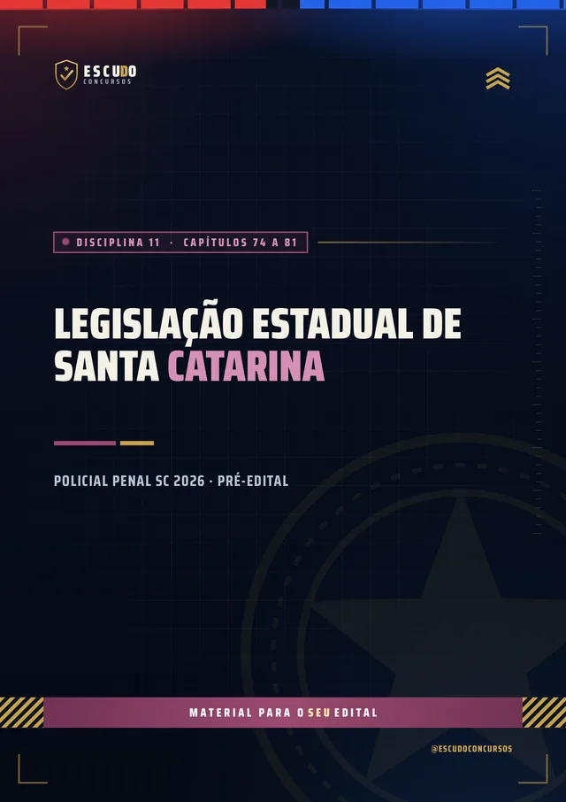
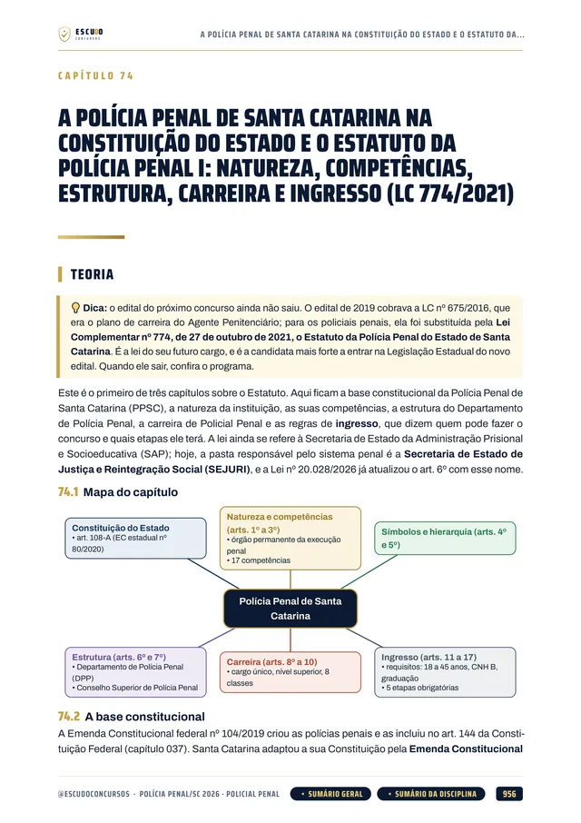
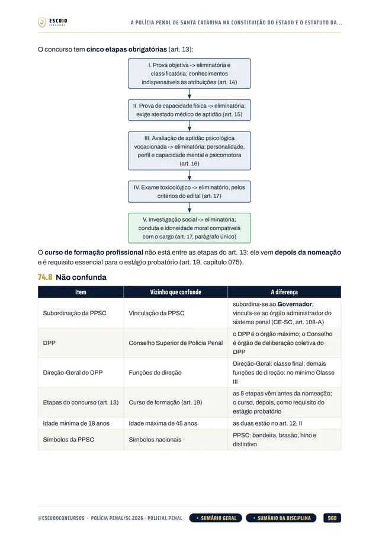
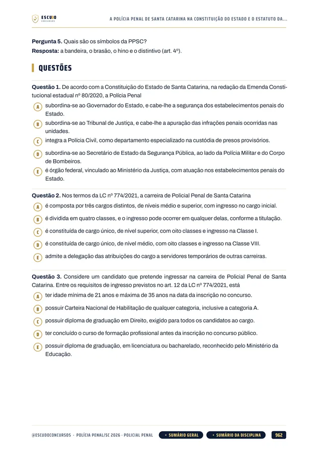
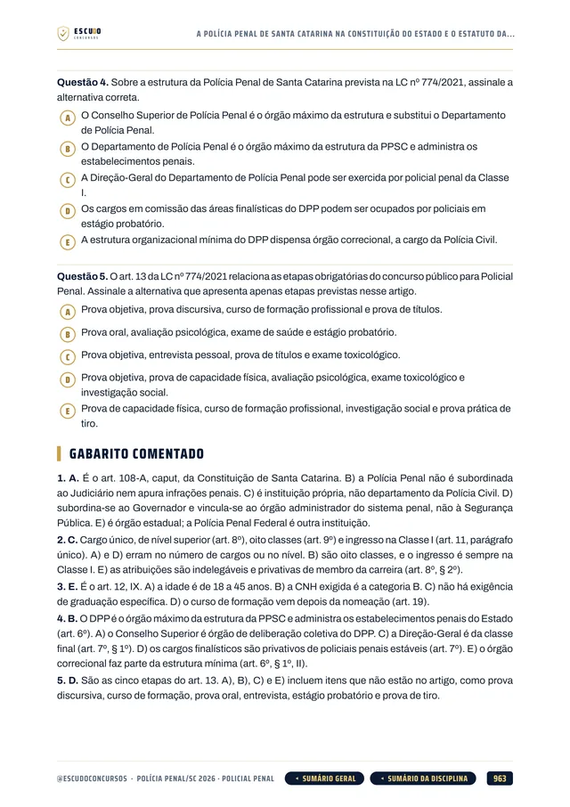
100% em PDF · Garantia de 7 dias · Pagamento pela Hotmart
Equipamento
O que você recebe
Curso em PDF organizado em 14 módulos (12 pelas disciplinas e 2 de simulado), com 1.020 páginas no padrão visual ESCUDO, para ler no computador, no tablet, no celular ou no app da Hotmart. Não há videoaulas.
81 capítulos cobrindo o programa de 2019, atualizado: Língua Portuguesa, Raciocínio Lógico, Sociologia Aplicada, Direitos Humanos, Direito Constitucional, Administração Pública, Direito Penal, Direito Processual Penal, Legislação Especial, Lei de Execução Penal e Legislação Estadual de Santa Catarina.
400 questões inéditas com 5 alternativas, de (A) a (E), todas com gabarito comentado: por que a correta está correta e onde está o erro de cada uma das outras.
Legislação Estadual de Santa Catarina em 8 capítulos: a Polícia Penal na Constituição do Estado, o Estatuto da Polícia Penal (LC 774/2021) em 3 capítulos, o Estatuto do Servidor (Lei 6.745/1985) em 3 e o Regimento dos Estabelecimentos Penais (LC 529/2011) em 2.
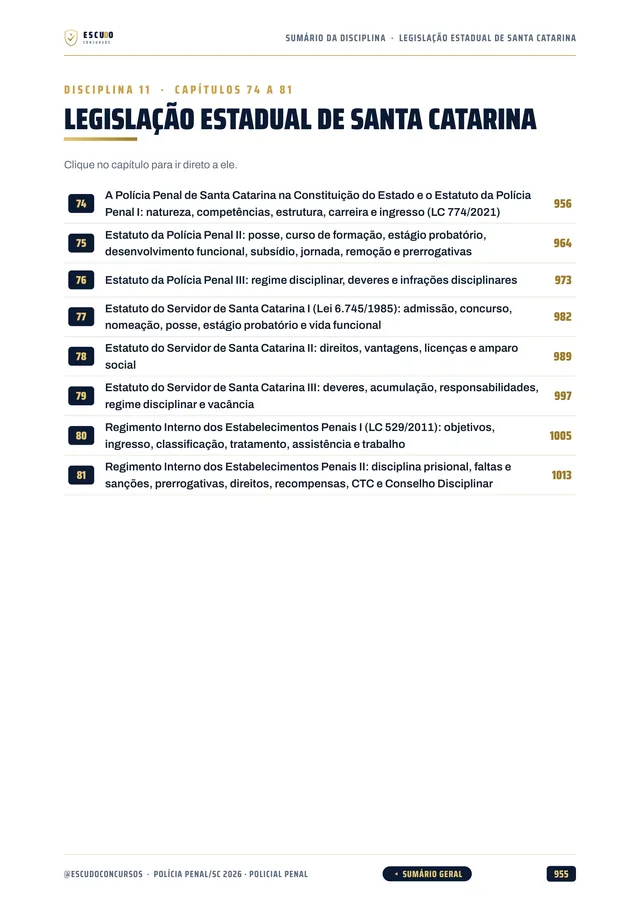
Lei de Execução Penal em 5 capítulos, com a Lei 7.210/1984 inteira, e Sociologia Aplicada em 4 capítulos, matéria própria deste concurso.
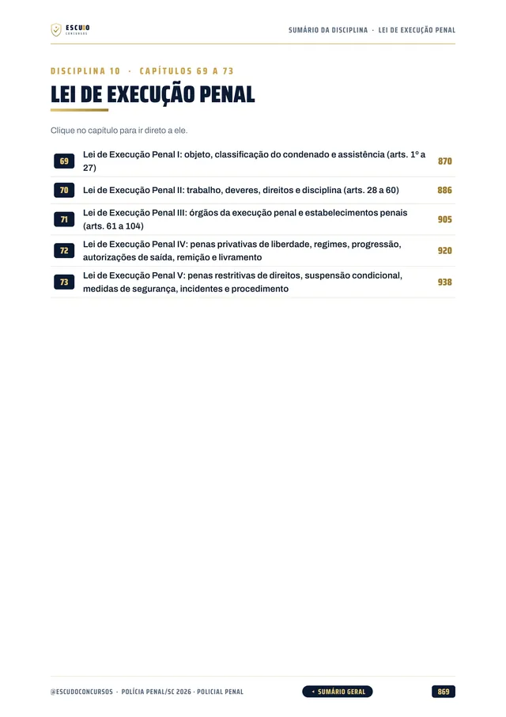
Pegadinhas e quadros "não confunda" ao longo da teoria, para você não cair nas armadilhas que a banca costuma montar.
Teoria com recursos para memorizar: mapa de cada capítulo, esquemas, revisão relâmpago e teste de memória no fim de cada capítulo.
Navegação clicável: do sumário você vai direto à disciplina e ao capítulo, e volta pelos botões do rodapé.
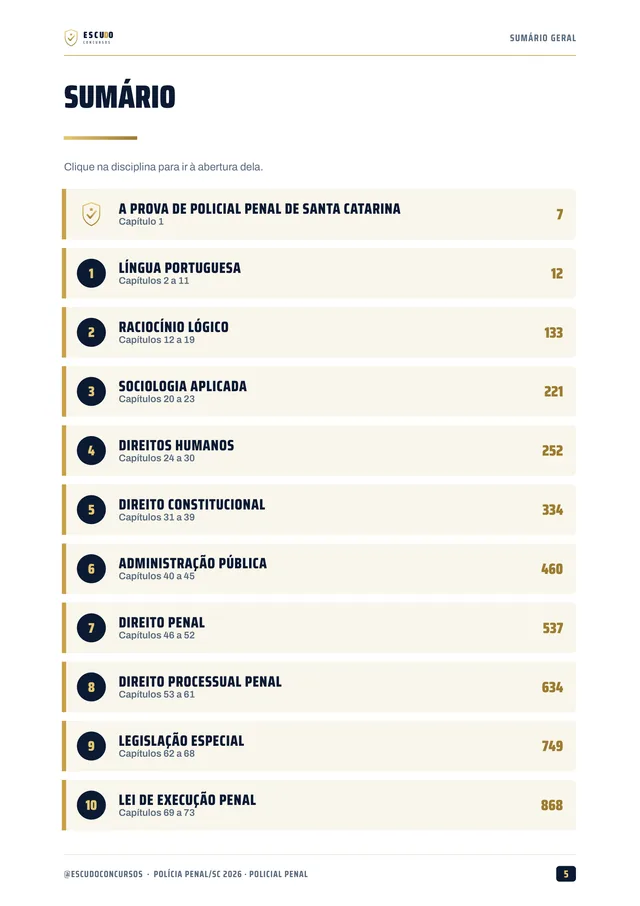
2 simulados inéditos de 100 questões de A a E, na distribuição da prova de 2019, cada um com caderno de comentários.
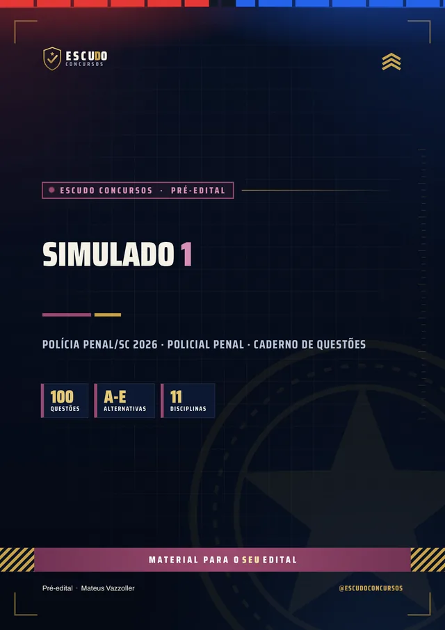
Plano de ação
Área de membros
| Módulo | Conteúdo | Liberação |
|---|---|---|
| M0 Comece aqui | Apresentação + capítulo 001 (como é a prova e como usar o curso). Bônus: PDF completo para baixar e imprimir | Na compra; o PDF completo no 8º dia |
| M1 Língua Portuguesa | Capítulos 002 a 011 | Na compra |
| M2 Raciocínio Lógico | Capítulos 012 a 019 | Na compra |
| M3 Sociologia Aplicada | Capítulos 020 a 023 | Na compra |
| M4 Direitos Humanos | Capítulos 024 a 030 | Na compra |
| M5 Direito Constitucional | Capítulos 031 a 039 | Na compra |
| M6 Administração Pública | Capítulos 040 a 045 | Na compra |
| M7 Direito Penal | Capítulos 046 a 052 | Na compra |
| M8 Direito Processual Penal | Capítulos 053 a 061 | Na compra |
| M9 Legislação Especial | Capítulos 062 a 068 | Na compra |
| M10 Lei de Execução Penal | Capítulos 069 a 073 | Na compra |
| M11 Legislação Estadual de Santa Catarina | Capítulos 074 a 081 | Na compra |
| M12 Simulado 1 | 100 questões e caderno de comentários | 30 dias após a compra |
| M13 Simulado 2 | 100 questões e caderno de comentários | 60 dias após a compra |
Treinamento
Treino no formato da prova
Cada simulado tem 100 questões de A a E, na distribuição da prova de 2019 (Português 15, Raciocínio Lógico 10, Sociologia 10, Direitos Humanos 15, Constitucional 5, Administração 5, Penal 5, Processo Penal 5, Legislação Especial 10, LEP 10 e Legislação Estadual 10), com caderno de comentários. O formato será conferido quando o edital sair.
Simulado 1
Para medir onde você está e ajustar o estudo enquanto o edital não sai.
30 dias após a compra
Simulado 2
Para conferir a evolução depois de mais um mês de estudo.
60 dias após a compra
Perfil
Para quem é
Para quem vai prestar o concurso de Policial Penal de Santa Catarina e quer começar agora, pelo programa da última prova, com a legislação de Santa Catarina e a LC 774/2021 cobertas por inteiro.
Proteção
Você tem 7 dias de garantia pela Hotmart. Se não for o que você esperava, pede o reembolso pela própria Hotmart, dentro do prazo.
Cronograma
Sem surpresa na área de membros
Na compra: todas as disciplinas em PDF, uma por módulo, com a teoria e as questões comentadas. É o curso inteiro, para começar a estudar no mesmo dia.
8 dias após a compra: o PDF completo para imprimir. É o mesmo conteúdo dos módulos num arquivo só, liberado depois da garantia de 7 dias.
Simulado 1: 30 dias após a compra, para medir onde você está no meio da preparação.
Simulado 2: 60 dias após a compra, porque ainda não há data de prova marcada.
O PDF completo e os simulados aparecem bloqueados na área de membros até a data de cada um: não é conteúdo faltando, é a liberação programada.
Instrução
Dúvidas
Não. É um curso 100% em PDF: teoria, questões comentadas e simulados para ler e resolver.
O acesso é imediato depois da confirmação do pagamento, pela área de membros da Hotmart (web ou app). O PDF completo para baixar e imprimir é liberado no 8º dia.
O Simulado 1 é liberado 30 dias após a compra e o Simulado 2, 60 dias após a compra.
Vale. O concurso de 2019 já está encerrado e não há, por enquanto, concurso novo confirmado, mas o grosso da prova (Português, Raciocínio Lógico, Direitos Humanos, Constitucional, Penal, Processo Penal, LEP e legislação especial) não depende do edital, e o curso já traz a legislação de Santa Catarina conferida no texto oficial. Quando o edital sair, vale o que ele disser.
Ainda não existe: o edital novo não foi publicado. O curso segue o programa do Edital 001/2019-SAP/SC (Língua Portuguesa, Raciocínio Lógico, Sociologia Aplicada, Direitos Humanos, Direito Constitucional, Administração Pública, Direito Penal, Processo Penal, Legislação Especial, Lei de Execução Penal e Legislação Estadual), atualizado para a LC 774/2021 e a Lei 13.869/2019. Quando o edital sair, o programa será conferido item por item e o curso, ajustado.
Ainda não foi definida. A banca do último concurso foi a FEPESE, e as questões do curso seguem o estilo dela: cinco alternativas, enunciado curto e muita cobrança da letra da lei. Se a banca mudar, o curso é ajustado ao estilo da nova.
Não há edital novo. Na prova de 2019, a objetiva teve 100 questões de múltipla escolha com cinco alternativas, de (A) a (E), nota de 0 a 10, aprovação com 5,00 e no mínimo 1 ponto em cada disciplina, sem redação. A LC 774/2021 prevê, depois da objetiva, prova de capacidade física, avaliação psicológica, exame toxicológico e investigação social, e o curso de formação vem depois da nomeação. O curso segue o formato de 2019 e será conferido quando o edital sair.
Não. As 400 questões de treino e as dos simulados são inéditas, escritas no estilo da banca a partir do programa de 2019.
É o que a lei atual indica: a LC 774/2021 exige graduação, em licenciatura ou bacharelado, para o ingresso na carreira de Policial Penal. O edital novo é que vai confirmar o requisito.
Você tem 7 dias de garantia pela Hotmart. Se não for o que você esperava, pede o reembolso.
Missão
Polícia Penal/SC 2026 · Policial Penal
de R$ 47 por 26% OFF
R$35
Pré-venda com o cupom PPSC35 até sair o edital, com atualização grátis para o edital novo.
R$47
Curso completo, com acesso imediato.
Material para o SEU edital. ESCUDO Concursos.
Continue estudando
 PM/SC 2026 · Instituto AOCPSoldado da Polícia Militar de Santa Catarina
PM/SC 2026 · Instituto AOCPSoldado da Polícia Militar de Santa Catarina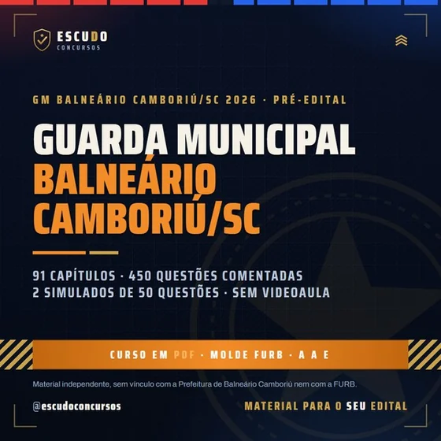
GM Balneário Camboriú 2026 · Pré-editalGuarda Municipal de Balneário Camboriú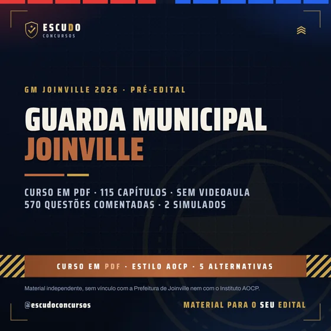
GM Joinville 2026 · AOCPGuarda Municipal de Joinville CFO PM/MG 2027 · Edital aberto · CRS/PMMGCadete do CFO da Polícia Militar de Minas Gerais
CFO PM/MG 2027 · Edital aberto · CRS/PMMGCadete do CFO da Polícia Militar de Minas GeraisGuia do concurso: edital, vagas e o que cai · Ver todos: concursos policiais · Concursos em Santa Catarina